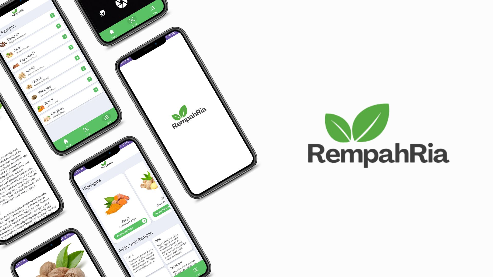

I am a professional Website & Android Developer with robust full-stack experience. I specialize in building scalable, cross-platform applications from the ground up. Whether it's designing intricate system architectures using PHP, Laravel, and NestJS, or crafting seamless user interfaces with React, Kotlin, and Flutter, I focus on delivering creative and optimal solutions to modern tech challenges.
Developed full-stack admin systems using React and NestJS. Managed large-scale deployment of 70+ company profile websites. Built Point of Sales (POS) systems and crafted initial UI/UX designs for web applications, ensuring high industry security standards.
Optimized public services by developing new functional web features, reducing bureaucratic delays. Analyzed system requirements, standardized codebases, and implemented strict data security measures aligned with government regulations.
Engineered an end-to-end Android application facilitating local spice data processing. Integrated external APIs seamlessly and elevated mobile application security standards while optimizing the User Experience (UX).

An Android application built during Bangkit Academy to facilitate local spice data processing and empower local farmers.

A comprehensive web platform and POS system developed for PT Tunas Baja Nindia Perkasa to digitalize product orders and inventory.

Official web portal for Badan Riset dan Inovasi Daerah (BRIDA) of Semarang City, designed to optimize public information delivery.

A digital news and media platform focused on law and criminal news coverage across the archipelago.
"Laka adalah developer yang luar biasa! Aplikasi Bangkit Capstone kami (RempahRia) sukses besar berkat dedikasi dan keahlian teknisnya dalam integrasi Android."
Project Manager, RempahRia
"Sistem B2B dan POS Depo Material berjalan sangat optimal. Penjualan material besi baja kami jauh lebih termonitor dengan akurat sekarang."
Direktur Operasional
"Proses digitalisasi layanan publik melalui platform web BRIDA sangat terbantu. Kolaborasinya proaktif, responsif, dan hasilnya sesuai regulasi."
Pemkot Semarang
Android Developer
Membangun aplikasi Android end-to-end untuk memfasilitasi identifikasi dan pengolahan data rempah lokal Indonesia. Mengintegrasikan teknologi deteksi objek berbasis Deep Learning menggunakan kamera smartphone, serta mengelola UI/UX yang responsif.
View Repository
Web Developer (B2B E-Commerce)
Sistem pemesanan (Point of Sales) terintegrasi berbasis web untuk mendigitalkan proses transaksi pemesanan besi baja dan manajemen inventaris. Membantu efisiensi operasional dan kalkulasi harga secara real-time berdasarkan lokasi proyek klien.
Visit Website
Government Portal Developer
Pengembangan platform layanan publik berbasis web untuk Badan Riset dan Inovasi Daerah Kota Semarang. Sistem ini mempercepat diseminasi berita instansi, publikasi riset, kompetisi inovasi daerah, serta mendukung standar e-Government dengan keamanan dan arsitektur data yang optimal.
Visit Website
Web Developer (News Portal)
Merancang dan mengembangkan portal media online yang tajam dan responsif. Memiliki integrasi CMS yang memudahkan jurnalis untuk merilis dan mengatur liputan terkini terkait isu Hukum dan Kriminalitas dengan antarmuka baca yang bersih.
Visit Website